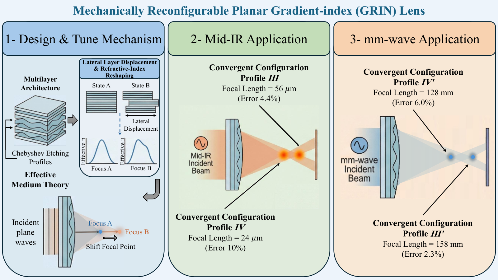

用于中红外和毫米波波段的机械可重构分层渐变折射率（GRIN）透镜
摘要
本文提出一种机械可调平面渐变折射率（GRIN）透镜的概念，可用于在中红外（mid-IR）或毫米波（mm-wave）频率下实现可重构聚焦。该概念基于根植于有效介质理论的多层设计，其中空间折射率分布采用第一类切比雪夫多项式合成。各层的对称横向位移可实现有效折射率分布的连续调制，从而在发散、无焦和会聚波前之间实现受控转变。数值仿真表明，该透镜在中红外和毫米波波段均具有准确的焦距调谐。在中红外波段，分别获得约 56 和 24 的焦距，相对误差分别约为 4.4% 和 10%。在毫米波波段，透镜产生约 158 mm 和 128 mm 的焦距，准确度分别提高至 2.3% 和 6.0%。重建的折射率分布与理想凸透镜分布高度相似，验证了所提出合成方法的有效性。所提出的 GRIN 透镜概念为可重构聚焦提供了一种可扩展且物理可解释的方法，并有望应用于多模态成像、自适应传感和通信系统。
关键词：
Focusing Lens, Gradient-Index Lens, Metamaterial, Reconfigurable Lens, Mid-Infrared, and Microwave.
††highlights: Planar multilayer GRIN lens enables dynamic tuning for mid-IR and mm-wave bands. Chebyshev polynomials provide optimal basis to approximate smooth index gradients. Focal distance and location are continuously controlled via lateral layer shifts. Translates the mechanical Alvarez lens tuning principle into the GRIN domain. Decouples base focusing power from the reconfigurable tuning mechanism.1 引言
透镜是通过折射操控电磁波和光的基本光学元件。它们使微波 [1, 2] 和光学 [3] 频谱中的应用成为可能。凸透镜和凹透镜是两种主要类型。每种类型都具有独特的折射率特性和应用。理解其行为对于成像 [4] 与传感 [5]、摄影 [6]、眼科 [7, 8]、显微术 [9]、视力矫正 [10] 以及激光 [11] 系统至关重要。波束成形与聚焦系统可对电磁波和光的传播提供精确控制。它们可提升无线电 [12, 13] 与光学系统 [14]、无损检测 [15]、雷达系统 [1, 16]、生物医学 [17]、光子学 [18]、激光雷达（LiDAR） [19]、光学相干层析成像（OCT） [20] 以及光学工程 [21] 应用中的性能。
渐变折射率（GRIN）透镜在这些应用中很重要，因为它们通过空间变化的折射率来调控电磁波和光。这消除了对复杂曲面的需求。与传统透镜相比，GRIN 透镜提供紧凑、轻量且像差校正的解决方案，使其适用于小型化和集成系统[2]。使用 GRIN 透镜进行波束成形可实现波束的动态转向和整形，这在工程和工业应用中至关重要。其强聚焦能力还提高了内窥镜和显微成像中的分辨率，支持生物医学成像和激光手术的进步[8, 22]。此外，GRIN 透镜在工业激光加工和电信中很有用，在这些领域中精确的波束控制可提高效率和信号完整性。
Fröch 等[21]提出了一种用于实时全彩成像的超构光学光纤内窥镜（MOFIE）。该设计使用逆向设计的超构光学器件来减少色差。它优化多色调制传递函数（MTF），以确保可见光波长范围内的宽带性能。该器件用氮化硅纳米柱制造，并与相干光纤束集成。与传统渐变折射率（GRIN）透镜相比，其刚性尖端长度减少了33%。Whiting 等[23]优化 GRIN 透镜，通过减小尺寸和提高光阑效率来改善反射阵列馈源性能。这些透镜具有空间变化的介电常数，并采用数值优化方法设计，包括伴随灵敏度和协方差矩阵自适应进化策略（CMA-ES）算法。增材制造用于验证这些设计。
Blackwell 等[24]提出了一种用于 Deutsch-Josza 算法的量子算法模拟器（QAE），使用逆向设计的太赫兹 GRIN 透镜。该方法将数值时域有限差分（FDTD）仿真与机器学习（ML）优化相结合。此方法提高了透镜性能。GRIN 透镜与硅 oracle 子块一起调制 THz 波，以模拟量子态。ML 逆向设计用于优化孔半径和透镜厚度。Moharrami 等[25]提出了一种在太赫兹频率下基于石墨烯-介质多层超材料（GDMMs）设计可调谐 GRIN 器件的方法。通过调控石墨烯层的化学势，对 GDMMs 的有效介电常数进行空间调制。采用有效介质理论（EMT）和 FDTD 方法分析平面和圆柱形 GDMM 结构。采用 GRIN 透镜、聚焦反射镜和圆柱形广义 Luneburg 透镜（GLL），以产生可调谐太赫兹光子射流。
文献[26]中介绍的研究提出了一种面向生物医学躯干扫描应用的可重构渐变折射率透镜。它为基于雷达的成像方法中现有的局限性提供了一种潜在解决方案。这种创新方法通过将球面波前转换为平面波前，提高了成像算法的精度，从而解决了传统人体匹配天线产生球面而非平面波前这一关键限制。该可重构机制采用流体调制，即水渗入内部腔体会动态改变透镜的局部有效介电常数。然而，这种设计需要包括储液器和泵送系统在内的额外液压基础设施，在临床环境中带来了实际实施挑战。此外，潜在的液体泄漏构成了可靠性问题，可能损害系统性能。
Mousavi 等人[27]提出了一种锥形渐变折射率透镜天线，可增强电磁波穿透能力，用于躯干近场成像。该方法涉及填充工程化介电混合物的四层透镜，并采用遗传算法进行优化，以最小化广义反射系数。根据全内反射理论进行锥形设计的透镜可确保辐射以平面方式聚焦。
[28]中的一项研究提出了一种基于渐变折射率半棒透镜的可重构平面光互连结构，用于交叉互连和并行互连。该设计利用 GRIN 基底内的轴上和离轴多重成像来对光信号进行路由，同时通过可移动横向反射镜实现可重构性。 Huang 等人[29]展示了一种可调谐二维液体梯度折射率（L-GRIN）微透镜，用于面外光聚焦。该平面微流控腔通过标准软光刻制造，通过共流的CaCl2溶液与去离子水之间的横向分子扩散建立双曲正割折射率分布，从而实现二维点聚焦。调节入口流速比可动态调节梯度对比度，并沿垂直于流动方向的轴移动焦点位置。该器件提供了一种低消耗、高可重复性的光流控机制，适用于芯片实验室应用。Zeng 等人[30]提出了一种石墨烯等离激元超表面，通过对单层石墨烯下方的介电层进行图案化来实现。该平台工作在太赫兹波段，实现了电子可调谐的渐变折射率透镜，能够在深亚波长尺度上实现高性能波聚焦、准直和导波。
本文提出一种可重构渐变折射率透镜，采用多层架构，并通过有效介质理论（EMT）设计空间变化折射率。每一层刻蚀有由第一类切比雪夫多项式定义的沟槽轮廓，确保平滑的折射率梯度以实现精确的可重构聚焦。具有镜像折射率分布的层进行对称横向位移可实现动态焦距调谐；对于中红外（mid-IR）系统，可采用压电或基于微机电（MEMS）的定位来实现，对于毫米波（mm-wave）系统，则可采用步进电机驱动来实现。在非渐变折射率透镜领域，与该架构密切相关的一个类比是Alvarez透镜 [31]。
传统Alvarez透镜通过横向位移互补的三次相位板实现焦距可调谐，产生二次相位分布，其光功率随位移线性变化，而元件间距保持不变 [31]。相比之下，我们的架构在平面渐变折射率透镜中实现了类似的调谐原理，用空间变化的有效折射率替代表面曲率引起的相位调制。固定的二阶切比雪夫层提供固定聚焦能力，而两个横向位移的三阶切比雪夫层调制有效折射率分布的二次项系数。传统Alvarez透镜依赖自由曲面并抵消三次矢高项，与之不同，所提设计利用切比雪夫基的正交性，并使用有效介质理论在光刻兼容的平面平台上实现所需的折射率分布。
所提出的渐变折射率透镜可采用传统介电材料制造。数值仿真验证了相位相干性和焦点准确度，几何光学（GO）分析确认了自适应聚焦能力。该设计集成了薄金属准直器，以减轻边缘效应并提高焦斑分辨率。总体而言，所提方法通过将基础聚焦能力与焦距调谐机制解耦，融合了渐变折射率光学与Alvarez透镜的已知工作原理，尽管其偏离了标准傍轴三次近似。因此，所提平面结构在保持标称透镜质量的同时实现了焦距控制。
此外，本工作对中红外与毫米波频段的联合研究证实了所提基于渐变折射率的焦距可调谐机制的频率可扩展性。由于透镜结构源自基于EMT的折射率合成，所提概念本质上是波长归一化的。因此，尽管绝对波长、材料平台和制造约束存在差异，相同的设计原理仍适用于差异极大的光谱域。
2 可重构渐变折射率透镜的结构
本研究正在开发一种面向中红外和毫米波段的渐变折射率透镜方案，其焦距可调，且焦点可在辐射近场区内重新定位。为了实现这种可重构聚焦，透镜被划分为若干层，每层由折射率不同的材料构成，如图 1 和 1 所示。为了调控渐变折射率透镜的有效折射率，对其各层材料进行刻蚀，从而通过采用有效介质理论（EMT）[32，33]来控制局部有效折射率。
具体而言，采用 EMT 对透镜各层的宏观特性进行建模。如图 1 所示，波纹的取向平行于 轴，该轴与入射波的电场方向一致。为了实现目标折射率分布，凹槽中可填充空气或具有不同介电特性的其他材料。然而，刻蚀后的各层应能够被机械移动，从而形成可重构的焦点。
图 1 还给出了层状结构的一个代表性单元胞。单元胞的 方向尺寸（高度 ）应取为波长的一小部分，以确保 EMT 的适用性。下文中， 表示工作频率下的自由空间波长。在折射率为 的介质中，波长更短：。在本研究中，参数 在图 1 中固定为 （），用于 150 THz 的中红外应用和 40 GHz 的微波应用，以保证沿 轴的各层折射率空间变化足够平滑，且充分小于 （其中 为 min）。这保证了无凹槽的最高折射率层（即最不利情形）满足亚波长单元胞条件。引入凹槽会降低有效折射率，增大材料中的波长，并使单元胞相对于波长更小。具体尺寸 、 和 通过解析推导得到，以在单元胞的每个位置实现目标局部折射率，而这些目标局部折射率由渐变折射率分布的要求确定。
通过全面的仿真与优化，研制出了一种基于三层架构的可重构渐变折射率透镜。该设计包含：() 固定高折射率层，主要决定透射场的相位分布；() 两个可独立移动的层，由相同的低折射率材料构成，并具有横向镜像的凹槽结构。因此，通过使第二层和第三层沿相反的横向方向对称位移，该透镜能够实现轴向焦点调节。在孔径尺寸为的情况下，每层沿横向延伸，使可调层能够实现最大为的反向位移，同时保持结构完整性和光学功能。该配置提供了精确的焦点控制。
2.1 有效介质理论指导的材料选择
传统凸透镜由于其曲面处的折射而将光聚焦到焦点，使所有入射光线会聚，图 2。曲面的曲率确保折射角具有空间依赖性，从而将光线引向焦点。若改用平面透镜，则可通过沿轴具有二次型有效折射率分布的渐变折射率透镜实现类似行为。
通过仿效该有效折射率分布，可以设计出一种能够在不同位置聚焦光束的结构，图 2。将光束聚焦到任意轴向点（式 1）所需的折射率分布由下式给出（见补充材料）：
| (1) |
当焦点不在轴上时，可沿轴向上或向下移动结构，以达到预期的焦点位置。图中所示的有效折射率分布在轴上具有不同的聚焦点。换言之，此类分布代表了沿轴将光束移动到所需焦点的理想情形。
可实现的焦点重定位范围由方向上的有效折射率极值决定。因此，制造具有可调焦点的渐变折射率透镜需要仔细选择材料，使其折射率能够忠实再现目标折射率分布。因而，材料选择对于实现可重构聚焦所需的渐变折射率分布至关重要。
图 2展示了以传统凸透镜为模型的有效渐变折射率透镜在孔径范围内的折射率梯度。可以看出，折射率的变化率是恒定的。该分析表明，有效折射率的准线性变化与渐变折射率透镜将入射光线会聚到单一焦点的能力密切相关。折射率变化越快，透镜的聚焦能力越强、焦距越短。
常规凸透镜（光线通过透镜后）的几何光学（GO）光线图如图 2 所示。可以看出，该透镜产生一个清晰的焦点。在这种情况下，标准 GO 公式以折射的斯涅尔定律为基础，对于渐变折射率（GRIN）透镜可重写如下：
| (2) |
其中 是透射光线角。注意，在平面 GRIN 透镜中，透镜厚度 ，第二项消失。上述结果假设透镜被一束平行于其光轴的光线照射。
2.2 面向折射率工程的刻蚀轮廓优化
为了获得沿 轴的目标有效折射率分布，必须选择适合各层折射率分布的基函数。这些分布通过在各层中刻蚀不同深度和高度的凹槽来实现。通过沿 轴移动各层，可沿传播方向（ 轴）产生不同的焦点。
基函数和层位移的选择至关重要，应进行优化以准确产生预期折射率分布。本节考察多种基函数，包括 Haar 小波、正弦、锯齿、Legendre 多项式、线性以及第一类 Chebyshev 多项式，评估它们近似并诱导平滑折射率变化的能力。图 3 展示了三层透镜中这些基函数的折射率分布以及所得有效折射率分布。图 3 至 3 展示了所选基函数作为刻蚀凹槽轮廓应用于 GRIN 透镜各层的情况。相应地，图 3 至 3 给出了通过该方法得到的有效折射率分布。结果表明，除第一类 Chebyshev 多项式外，至少在三层 GRIN 透镜配置中，所测试的其余基函数均未产生令人满意的分布（见第 3.1 节）。
鉴于所提出的渐变折射率透镜所实现的有效折射率分布（图 3 和图 3），第一类切比雪夫多项式成为一种有前景的函数基，为实际实现提供了途径。在所考虑的三层渐变折射率透镜中，各层分别实现这些基函数。随后，通过沿 轴对 、 和 个单位进行受控横向位移，获得所需的整体分布；这些位移分别对应于多层渐变折射率透镜中的连续层。具体而言，第一层保持静止，作为有效折射率分布的主要贡献者；而第二层和第三层沿横向对称位移，即幅度相等但符号相反，从而实现有效折射率的可调谐性。
这种对称位移可通过用于中红外波段的压电或基于微电子机械系统（MEMS）的纳米定位系统，或用于毫米波波段的步进电机驱动系统来实现，分别提供亚微米或微米尺度的驱动分辨率。在 THz 和红外应用中，压电或基于 MEMS 的纳米定位系统可提供更优的位移控制，通过电压调制实现 1–5 nm 的横向位移。毫米波波段中的精密微步进通过丝杠将数字脉冲控制的角旋转转换为直线平移，可产生 1–5 的增量步。
图 4 给出了图 3 所示折射率分布在渐变折射率透镜孔径上的折射率梯度分布，并以传统凸透镜梯度分布（理想情况）作为参考。似乎尽管透镜中某些点存在不规则性（无限梯度），但由于其空间范围很小，对整体光学性能的影响可以忽略。分析表明，当重建的渐变折射率透镜梯度分布与理想凸透镜梯度密切匹配时，所得焦斑的锐度和焦距准确度显著提高。在理想情况与重建情况下的折射率梯度斜率之间观察到差异，图 4。因此，由于理想分布与重建分布之间折射率梯度斜率的不匹配，以及上述不规则性，渐变折射率透镜表现出纵向像差，这可能导致多焦特性（即，与传统透镜的均匀聚焦行为相比引入像差）。
这种偏差之所以出现，是因为重建的有效折射率无法精确贴合理想分布，如图 5 和 7（分布 和 ）所示。随着偏差增大，理想情形与预期情形之间的差异变得更加显著。此外，某些重建的有效折射率分布在其边界处可能偏离所需的折射率极限。因此，这些情形可能导致理想聚焦分布与预期聚焦分布（图 5 和 7 中的分布 和 ）之间出现差异。图 3 中给定折射率（具体值为 ）对应的几何光学焦点如图 4 所示。它显示出传统透镜（图 2）产生的理想焦点与所提出的 GRIN 透镜实现的半模糊焦点之间存在可辨别的差异。
2.3 基于等效介质理论（EMT）的刻蚀深度确定
需要提醒的是，在所考虑的 GRIN 透镜概念中，第一机械固定层内的沟槽必须经过设计，使其有效折射率分布遵循二阶切比雪夫多项式。相反，第二层和第三层的沟槽分布必须使用对称镜像的三阶切比雪夫多项式导出。因此，透镜的整体有效折射率通过各独立层所贡献折射率的叠加（即式 3 的混合规则）获得。
另一方面，对分离的 GRIN 透镜各层的有效折射率进行 EMT 评估时，采用其自身的混合规则：
| (4) |
其中 、 和 分别表示沟槽材料与层材料的折射率，以及第 层处的单元胞填充因子。所有沟槽的初始沟槽高度设为 ，即 。
注意，沟槽深度必须根据填充因子和每个单元胞所需的折射率来确定。在某些设计配置中，最佳沟槽深度接近相应层厚，以实现目标折射率。然而，为保持图案化层的结构完整性，沟槽深度被限制在该理论最大值以下。作为补偿，单元胞臂厚逐渐减小，直至达到所需折射率，即 厚度减小而沟槽高度增加。当最小臂厚在特定设计场景中无法同时满足折射率目标与机械稳定性要求时，这种厚度减小方法可能表现出一个关键限制。因此，在这些特定设计场景中，沿 轴的实现折射率分布与理想折射率分布之间会出现局部差异。
3 数值验证与理论预测对比
如前所述，将在横向位移条件下考察两个孔径尺寸分别为 和 mm 的三层渐变折射率（GRIN）透镜。这样做的目的是评估所提出设计在 149 至 151 THz 和 39 至 41 GHz 频段内的自适应聚焦性能，其中每个透镜层均位移 个单位。
针对指定光谱的 GRIN 透镜设计，在优化过程中采用了两种不同的介电衬底。在中红外波段，硅（Si）用作第一层的衬底，而硒化锌（ZnSe）用作第二层和第三层的衬底材料。Si 和 ZnSe 材料的折射率随 150 THz 工作频段的变化关系取自参考文献 [34, 35, 36]。Si 和 ZnSe 材料在 150 THz 处的折射率分别为 3.4545（消光系数为 ）和 2.4310（）。然而，在毫米波范围内，第一层采用 Rogers RO3010 衬底，其折射率为 。相比之下，第二层和第三层采用 Rogers RO3006 衬底构建，其折射率为 。
所提出的中红外和毫米波 GRIN 透镜的各层厚度分别为 40、20 和 20 微英寸（中红外），以及 40、20 和 20 毫英寸（毫米波）。在全结构仿真中，边界条件设置为开放，并增加额外空间以尽量减小沿 和 方向的虚假反射。然而，沿 轴的边界条件设置为电场，以恰当约束平行于域界面的场分量。这种组合可确保对仿真结构中的波传播和场约束进行准确建模。
3.1 基函数选择
通过将重建折射率分布与目标透镜分布进行比较，采用相关系数、余弦相似度、均方根误差（RMSE）、平均绝对误差（MAE）、欧氏距离、PRDN、最大比较（最大绝对误差）以及式 6 定义的接近度 ，对候选基函数进行了评估：
| (6) |
这些指标量化了全局重建保真度以及影响光学性能的局部偏差。其结果与由全波/几何光学（GO）仿真得到的焦距误差（）进行了相关分析。基于这些数学与光学指标，选择第一类切比雪夫多项式作为所提出的可调谐GRIN透镜的基函数（表1）。
| Profiles and | |||||||
|---|---|---|---|---|---|---|---|
| Similarity | Haar | Legendre | Chebyshev | ||||
| metric | Spectrum | wavelets | Sinusoidal | Sawtooth | polynomial | Linear | polynomial |
| Euclidean | mid-IR | 57.87 | 43.97 | 18.34 | 28.38 | 39.06 | 23.66 |
| distance | mm-wave | 64.71 | 54.05 | 16.66 | 17.28 | 58.79 | 12.66 |
| mid-IR | 1.02 | 0.78 | 0.32 | 0.5 | 0.69 | 0.42 | |
| RMSE | mm-wave | 0.81 | 0.68 | 0.21 | 0.22 | 0.73 | 0.16 |
| Correlation | mid-IR | 5.5710-15% | 4.2310-15% | 96.94% | 95.83% | 5.8110-15% | 99.99% |
| coefficient | mm-wave | 1.7510-14% | 1.2410-14% | 96.88% | 94.62% | 4.3310-15% | 100% |
| Mean | mid-IR | 0.97 | 0.71 | 0.22 | 0.49 | 0.50 | 0.42 |
| absolute error | mm-wave | 0.61 | 0.51 | 0.19 | 0.9 | 0.63 | 0.13 |
| Cosine | mid-IR | 88.60% | 93.01% | 99.48% | 99.84% | 94.42% | 99.97% |
| similarity | mm-wave | 92.56% | 94.88% | 99.73% | 99.56% | 93.88% | 99.72% |
| mid-IR | 299.40% | 227.50% | 94.90% | 146.80% | 202.10% | 122.42% | |
| PRDN | mm-wave | 167.28% | 139.74% | 43.06% | 44.66% | 151.99% | 32.74% |
| mid-IR | 0.80 | 0.80 | 0.80 | 0.46 | 0.80 | 0.44 | |
| |Max. Comparison| | mm-wave | 0.22 | 0.22 | 0.22 | 0.13 | 0.22 | 0.15 |
| Focal-length | mid-IR | - | - | 31.45% | 30.81% | - | 4.37% |
| error | mm-wave | - | - | 32.76% | 39.95% | - | 2.27% |
| mid-IR | 30.94 | 22.66 | 7.07 | 15.65 | 15.97 | 13.36 | |
| Closeness | mm-wave | 39.14 mm | 32.58 mm | 11.95 mm | 11.97 mm | 40.46 mm | 8.46 mm |
| Profiles and | |||||||
| Similarity | Haar | Legendre | Chebyshev | ||||
| metric | Spectrum | wavelets | Sinusoidal | Sawtooth | polynomial | Linear | polynomial |
| Euclidean | mid-IR | 70.22 | 64.24 | 47.22 | 34.95 | 66.15 | 33.07 |
| distance | mm-wave | 67.60 | 63.66 | 41.95 | 28.03 | 73.59 | 27.78 |
| mid-IR | 1.24 | 1.14 | 0.83 | 0.62 | 1.17 | 0.58 | |
| RMSE | mm-wave | 0.85 | 0.80 | 0.52 | 0.35 | 0.92 | 0.35 |
| Correlation | mid-IR | 2.8210-15% | 5.9210-15% | 98.59% | 97.58% | 2.9110-15% | 98.63% |
| coefficient | mm-wave | 8.0210-15% | 2.9610-14% | 97.95% | 97.29% | 5.6410-15% | 98.22% |
| Mean | mid-IR | 1.08 | 0.98 | 0.75 | 0.56 | 1.04 | 0.55 |
| absolute error | mm-wave | 0.69 | 0.68 | 0.49 | 0.32 | 0.82 | 0.33 |
| Cosine | mid-IR | 90.89% | 93.64% | 99.64% | 99.73% | 92.76% | 99.89% |
| similarity | mm-wave | 95.13% | 96.16% | 99.84% | 99.78% | 93.52% | 99.84% |
| mid-IR | 160.30% | 146.65% | 107.79% | 79.77% | 151.00% | 75.48% | |
| PRDN | mm-wave | 136.96% | 128.98% | 84.99% | 56.80% | 149.11% | 56.28% |
| mid-IR | 0.80 | 0.97 | 0.98 | 0.73 | 0.71 | 0.62 | |
| |Max. Comparison| | mm-wave | 0.41 | 0.73 | 0.51 | 0.40 | 0.30 | 0.26 |
| Focal-length | mid-IR | - | - | 38.77% | 41.40% | - | 9.95% |
| error | mm-wave | - | - | 45.94% | 31.61% | - | 6.02% |
| mid-IR | 30.50 | 31.21 | 24.14 | 17.99 | 33.39 | 17.61 | |
| Closeness | mm-wave | 44.18 mm | 43.73 mm | 31.13 mm | 20.78 mm | 52.60 mm | 20.94 mm |
3.2 实现目标波前收敛：有效折射率分布与焦点分析
表示所提出构型的超胞如图1所示。在该设计中，采用这些衬底的四种不同构型（分布–和–）通过对第二层和第三层施加横向位移来实现。GRIN透镜层的刻蚀轮廓使用第一类切比雪夫多项式生成，图5至5以及7至7。具体而言，第一层（固定层）中的凹槽设计为产生遵循二阶切比雪夫多项式的有效折射率分布。相比之下，第二层和第三层的凹槽轮廓由三阶切比雪夫多项式确定，这些轮廓关于对称镜像，以在折射率分布中实现交替的最大值和最小值。在单元胞仿真中，轴方向上的单元胞边界处边界条件设置为理想磁壁条件。该条件强制切向磁场为零，或等价地，使单元胞边界处的法向电场导数为零。沿轴方向的单元胞边界处采用带有额外空间的开放边界，以消除反射。在轴方向的单元胞边界处，采用电壁条件。
为评估所提出构型在中红外波段的自适应聚焦性能，在各相应层的横向位移为 的条件下，分析了光阑尺寸为 的三层GRIN透镜。在不同场景（分布-）下，对第二层和第三层考察了四个不同的位移量，范围为 。这些不同的位移量使得能够系统评估中红外波段的焦距调谐能力。此外，为评估微波波段内的焦距调谐能力，研究了光阑宽度为 mm的三层GRIN透镜在相同的 mm横向失配下的表现。对第二层和第三层考虑了四个不同的位移值（分布-），覆盖 mm，从而能够系统探索微波波段的焦点可调性。此外，在GRIN透镜的照明侧集成了一个具有可调光阑的超薄金属准直器，以控制入射光束，使其仅通过准直器。
图 5-5 展示了每个单独层的折射率，以及分布 至 下中红外系统对应的有效折射率。分布 - 对应于各层的位移值 。关于分布 和 的重建有效折射率，透射波前预计呈现发散和无焦特性，即一种无净聚焦效果的透镜（亦即透射波应保持平行）。图 5 展示了分布 - 的重建有效折射率，以及作为基准的、焦距分别为 54 和 22 的传统凸透镜的理想折射率。图 5 给出了理想情形和重建情形下有效折射率随光阑变化的梯度。分布 的有效折射率梯度偏差极小。相比之下，对于分布 ，梯度行为表明重建的有效折射率无法产生锐聚焦光斑。以余弦相似度作为比较重建有效折射率与焦距为 54 和 22 的理想分布形状的准则，得到分布 和 的相似度分别为 99.97% 和 99.89%。此外，在使用归一化有效折射率将重建分布与所提出的理想情形进行比较时，观察到相关性分别为 99.99% 和 98.63%，见图 5。作为最终比较，分布的接近度量化为 13.36 和 17.61 ，这代表了用于确认分布相似性的近似合适结果，见图 5。
在对所提出的渐变折射率透镜进行数值研究时，除聚焦之外，作者还观察到了寄生衍射效应；这些效应会显著损害光束表征的准确度，并错误反映透镜的真实聚焦性能，如图6和8所示。当透镜被具有锐利阴影边界的空间受限光束激发时，就会出现这些效应。为减轻这种不良现象，作者采用了一种沿轴具有高斯振幅分布的激发方案。研究发现，这种配置能有效抑制上述寄生效应。
在仿真中，高斯激发分布是通过将若干独立激发端口的场按高斯包络函数加权后进行叠加而生成的；由此得到的输出场平滑且性质良好，没有明显伪影，如图6和8所示。因此，该方法确保解析与数值仿真得到的光束图样更忠实地反映渐变折射率透镜的真实聚焦能力，从而能够对所提出的设计进行准确评估。
在中红外仿真中，使用20个端口实现高斯激发分布，其高斯包络的标准差为 。在渐变折射率透镜孔径内布置了16个端口；不过，在透镜孔径外的每一侧各放置两个端口，以保持激发场在孔径范围内的均匀性。相比之下，在毫米波仿真中，由于该光谱范围内的孔径尺寸更大，采用了40个端口，并采用 mm的高斯包络。其中，30个端口位于孔径内，而孔径外每一侧各放置五个端口。
图 6 和 6 显示了所设计的渐变折射率（GRIN）透镜在中红外波段的重构归一化电场分布；该透镜由常规介电材料（具体为 Si 和 ZnSe）制成，对应于有效折射率剖面 -。图 6 和 6 展示了分别表现出散焦和并行波前传播（无焦）行为的电场图样。相反，图 6 和 6 描绘了焦斑大致形成于预期焦距 56.47 和 24.37 处的情形，相对误差分别为 4.37% 和 9.95%。数值计算焦距 与理想焦距 之间的相对偏差通过百分比误差 [%] 量化。
图 7 至 7 展示了每个单独层的折射率，以及其在剖面 至 下毫米波系统对应的有效折射率。剖面 - 分别对应于层偏移值 mm。关于剖面 和 的重构有效折射率，透射波前预期分别表现出散焦行为和无可净聚焦效应的透镜行为。图 7 展示了剖面 - 的重构有效折射率，以及焦距为 154 mm 和 120 mm 的常规凸透镜的理想折射率，后者用作基准。图 7 展示了理想情形和重构情形下有效折射率随光阑变化的梯度。剖面 的有效折射率梯度偏差可忽略不计。相反，对于剖面 ，梯度行为表明重构有效折射率无法产生锐利焦斑。以余弦相似度作为度量，将重构有效折射率的形状与焦距 154 mm 和 120 mm 下的理想剖面进行比较，剖面 和 的相似度分别为 99.72% 和 99.84%。此外，通过归一化有效折射率将重构剖面与所提出的理想情形进行比较时，观察到相关性分别为 100% 和 98.22%（图 7）。最后，剖面接近程度被量化为 8.46 mm 和 20.94 mm，这是用于确认剖面相似性的较为合适的结果（图 7）。
图 8 和 8 给出了针对毫米波频谱设计、采用常规介电材料（即 Rogers RO3010 和 RO3006）的渐变折射率（GRIN）透镜所重建的归一化电场分布，这些分布对应于有效折射率分布 至 。图 8 和 8 分别展示了呈现发散和并行波前传播行为的电场图样。相比之下，图 8 和 8 展示了在预期焦距 157.58 mm 和 127.68 mm 附近产生焦斑的情形，相应的相对误差分别为 2.27% 和 6.02%。
用于评估所提出透镜聚焦能力（聚焦性能）的一个指标是数值孔径（NA），式 7：
| (7) |
其中 是超透镜工作介质的折射率，对于空气，。从物理上讲，NA 是一个无量纲数，用于量化透镜能够接收或发射电磁波的角度范围。给定透镜尺寸及其可调焦距范围，计算得到的 NA 在中红外和毫米波频谱中分别处于 28.42% 至 58.83% 以及 20.35% 至 25.77% 范围内。
此外，半高全宽（FWHM）值从图 9 中提取，在中红外波段分别为 6.9 和 3.1 ，对应 Profile 和 Profile ；在毫米波段分别为 35.5 mm 和 26.8 mm，对应 Profile 和 Profile 。毫米波设计中更宽的 FWHM 源于（）梯度分布的空间采样较低（128 个单元胞，而中红外设计中为 320 个）以及（）使用准直器和为缩短焦距所需的更大横向层位移，这会引入梯度斜率误差和边界截断。这些效应会增大纵向像差并展宽 FWHM。
FWHM 与数值孔径（NA）和工作波长 通过 相关联，其中 表征聚焦质量，并由 得到。对于中红外设计（），提取的 值对于 Profile 和 Profile 分别为 0.98 和 0.91；而对于毫米波设计（ mm），它们对于 Profile 和 Profile 分别为 0.96 和 0.92。较低的 值对应于更紧致、更接近衍射极限的焦斑，而较大的值则表明由于像差和其他非理想效应导致更宽的 FWHM。
菲涅耳数（）定义为：
| (8) |
其中 为孔径直径， 为到观察点的距离；该数区分辐射近场（菲涅耳）与远场（夫琅禾费）传播，其中 表示辐射近场工作（菲涅耳衍射）。利用式 8， 在中红外透镜中为 2.37 至 5.82，在毫米波透镜中为 1.14 至 2.43，表明聚焦处于中等菲涅耳衍射区。要在较小层位移下获得更锐利的焦斑，同时保持单元胞透射效率，需要增大孔径与波长之比（）。
3.3 金属准直器
在渐变折射率（GRIN）透镜的照明侧引入超薄金属准直器，用于毫米波聚焦。归一化 场的全波仿真表明其有三个作用：（）通过将入射波限制在通光孔径（）内来抑制不规则边缘衍射，尤其是在最大横向位移（）处；（）遮挡外部孔径区域，在该区域大位移会引入边界截断和梯度斜率误差；以及（）将波传播限制在中心区域，在该区域切比雪夫推导的折射率分布与目标透镜最匹配。仿真进一步表明，减小准直器孔径会使焦斑向透镜移动，并以峰值光强为代价改善其空间清晰度。因此，必须选择准直器孔径，以平衡焦斑位置、光斑尺寸和光强。对于发散配置，不需要准直器。
针对 Profile ，使用四种配置评估了准直器对毫米波聚焦的影响：（）无准直器；（）采用 72 mm 光阑（比透镜光阑大 12.5%，为 mm）；（）光阑等于透镜光阑；（）采用 56 mm 光阑（比透镜光阑小 12.5%，为 mm），如表 2 所示。结果表明，减小准直器光阑会缩短焦距，使焦斑更靠近透镜，同时降低峰值光强。
| Aperture | Focal | Normalized | |
| length | length | focal intensity | |
| Collimator | [mm] | [mm] | [%] |
| ✗ | - | 179.88 | 100 |
| ✓ | 72 | 153.58 | 93.51 |
| ✓ | 64 | 127.68 | 78.63 |
| ✓ | 56 | 108.63 | 65.24 |
3.4 可调焦距随层位移的变化
在光学与衍射系统中，光焦度因子（）定义为透镜的光焦度，即其焦距的倒数（，在中红外波段以 [] 表示，在毫米波系统中以 [mm] 表示），即 。在会聚配置中，通过第二层与第三层的相互反向位移，透镜的光焦度因子与层位移量成比例变化。为准确预测所提出渐变折射率（GRIN）透镜在其他位移值下的 ，对第二层和第三层施加 （中红外）和 mm（毫米波）的位移值时，其焦距通过数值计算分别确定为 [49.47,32.37,28.37] 和 [150.28,138.98,131.68] mm。表 3 总结了在会聚与平行配置下，所提出渐变折射率透镜第二层和第三层横向位移引起的 变化及焦距估计误差。
为估计不同层位移下的焦距，对位移-焦距数据进行了二阶多项式拟合。选择二阶模型是因为低阶多项式无法准确捕捉最大横向位移（）附近的非线性行为，同时在整个调谐范围内保持准确度。这一点通过比较二阶拟合与一阶模型的决定系数（）和均方根误差（RMSE）进行了验证（表 4）。中红外与毫米波系统的所得模型见式 9–10，并在图 10 中示出。在两种情况下，拟合曲线表明，层位移量（）的小幅增加会在会聚调谐范围内引起 的近乎恒定变化，表明调谐近似线性。
| (9) |
| (10) |
| mid-IR spectrum | ||||||
| shift values [] | 4.57 | 0 | -2 | -4 | -6 | -8 |
| [] | - | 56.47 | 49.47 | 32.37 | 28.37 | 24.37 |
| [] | - | 54 | 46 | 30 | 26 | 22 |
| [%] | - | 4.37 | 7.01 | 7.32 | 8.35 | 9.95 |
| [m-1] | 0 | 17.71 | 20.41 | 30.89 | 35.25 | 41.03 |
| mm-wave spectrum | ||||||
| shift values [mm] | 7.9 | 0 | -4 | -6 | -8 | -12 |
| [mm] | - | 157.58 | 150.28 | 138.98 | 131.68 | 127.68 |
| [mm] | - | 154 | 145 | 133 | 125 | 120 |
| [%] | - | 2.27 | 3.51 | 4.31 | 5.07 | 6.02 |
| [m-1] | 0 | 6.35 | 6.65 | 7.19 | 7.59 | 7.83 |
| Spectrum | Model order | RMSE [m-1] | Adequacy assessment | |
|---|---|---|---|---|
| 1st-order (linear) | 0.9874 | 1.5181103 | Fairly adequate | |
| 2nd-order (quadratic) | 0.989040 | 1.413517103 | Fairly adequate | |
| 1st-order (linear) | 0.824 | 1.134 | Fairly adequate | |
| 2nd-order (quadratic) | 0.9775 | 0.4054 | Highly adequate |
归一化灵敏度有利于分析渐变折射率透镜的聚焦性能，因为它能够在不同层位移之间进行直接且公平的比较。归一化灵敏度指标是一个无量纲因子，定义为 的相对变化，其对应于透镜层（）的每相对位移，其中 和 表示参考 以及中红外（ m-1 和 ）和毫米波（ m-1 和 ）情形下的位移值。为评估透镜聚焦性能，图10和图10给出了中红外和毫米波结构在一系列位移值下的归一化灵敏度，这些位移值对应于不同的透镜 质量。在会聚配置中，随着层位移的幅度（）增大（即 减小），透镜的 增大。
所提出的机械可重构渐变折射率透镜的关键设计参数和仿真聚焦性能总结在表 5 中。与先前工作相比，所提出的概念在不依赖复杂馈电网络或3D打印的情况下，展现出具有竞争力或更优的焦点准确度与机械可调谐性。此外，与需要外部流体处理或电压偏置的光流控或石墨烯基可调渐变折射率透镜不同，所提出的对称横向位移机制提供了一种稳健的机械替代方案。
总体而言，表 5 中的结果表明，所提出的渐变折射率透镜在两个光谱波段均实现了准确的焦点控制，百分比误差低于 10%，使其在先进的可重构渐变折射率（GRIN）聚焦系统中处于有利地位。焦点的调谐分辨率可由驱动机制以及将层位移与焦距联系起来的关系确定。在理想条件下，估计的焦距调谐分辨率在中红外可约为 2-10 nm，在毫米波可约为 1-5 。这些数值表示在假设理想准线性功率因数响应时，每个机械步可达到的最小焦移。然而，仍需实验验证以确认这些值在实际中是否可行。
| Approach | |||||||||
| or | Frequency | Polarization | Reconfigurability | Key | Limitations | Remarks | Tuning | Tuning | |
| Refs. | Structure | range | mechanism | features | range | resolution | |||
| Meta-optical | Visible | 33% reduction in rigid | No | Inverse-designed | Depth of field | Not | |||
| [21] | fiber endoscope | wavelengths | – | Static | tip length; 22.5∘ FOV | tunability | meta-optics | > 30 mm | applicable |
| GRIN lens | Antenna performance | High gain | |||||||
| [23] | integrated with | Microwave | Dual | Static | enhancement; Uniform | No | Improved aperture | Not | Not |
| reflectarray feeds | polarization | field distribution | tunability | efficiency | applicable | applicable | |||
| Inverse-designed | High focusing efficiency | No tunability | Computationally | Not | Not | ||||
| [24] | GRIN lens | THz | Linear | Static | Quantum algorithm-based | Complex ML | intensive design | applicable | applicable |
| Graphene-dielectric | Electrical tuning | Needs biasing | Active | Tunable | |||||
| [25] | multilayer | THz | TM | (chemical | Continuous tunability | Material/Fabrication | material-based | photonic | Voltage |
| GRIN lens | polarized | potential) | EMT-based design | complexity | control | jets | dependent | ||
| Body-matched | Improves imaging | Requires pumps | Not practical | Fluid | |||||
| [26] | GRIN lens | Microwave | Linear | Fluidic | accuracy | Requires reservoirs | for | Not | volume |
| for imaging | tuning | Plane-wave conversion | Leakage risk | compact systems | applicable | dependent | |||
| Tapered | |||||||||
| [27] | GRIN lens | Microwave | Linear | Static | Enhanced penetration | Physically large | 125% fractiona | Not | Not |
| antenna | (Slot-fed) | Near-field imaging | Complex fabrication | bandwidth | applicable | applicable | |||
| Planar GRIN using | High channel counts | Wavelength-dependent | Discusses | Number of channels | |||||
| selfoc semi-rod | Not | Simple geometry | performance | fundamental limits | scales inversely | ||||
| lens for on-axis and | specified | No integrated | Chromatic and off-axis | (SBP) for | with wavelength | ||||
| [28] | off-axis multiple | Optical | Mechanical | surface components | aberrations | channel capacity | Discrete | ||
| Microfluidic | Simple fabrication | Optical aberrations | Fully tunable | 120-130 | Syringe | ||||
| L-GRIN | Not | Low fluid consumption | Temperature-sensitive | liquid GRIN | along the | pumps | |||
| [29] | lens | Optical | specified | Fluidic | Easy integration | Precise flow control | lens | -axis | dependent |
| GRIN Luneburg | Complex feed network | Tunability | |||||||
| [37] | lens with | Ku-band | Dual | Beam switching | Multibeam operation | Not | System-level | is external | Discrete |
| feed matrix | polarization | via feed network | Reduces mutual coupling | lens-intrinsic tuning | beamforming | (feed) | |||
| Active GRIN | Low power consumption | Requires a complex | All 1024 elements | 40∘ | |||||
| using | Linear | Electronic | 简化控制网络 | multi-layer PCB | are controlled | beam steering | Discrete | ||
| [38] | FSS | Microwave | polarization | tuning | Wide 3-dB bandwidth | for FSS structure | simultaneously | range | |
| Multilayer planar | Mechanical lateral | Continuous focal tuning | |||||||
| GRIN lens | displacement | No biasing | Requires precision | ||||||
| This | (EMT- and | mid-IR | Linear | (opposite layers | No fluids | mechanics; residual | Compact | 24.37–56.47 | Actuator |
| work | Chebyshev-based) | mm-wave | (y-pol.) | shift) | Scalable | aberration at extremes | <10% error | 127.68–157.58 mm | dependent |
3.5 横向失准与制造误差的解析和数值公差分析
进行了基于偏微分的解析公差分析，以评估有效折射率和焦距对制造误差的灵敏度（见补充材料）。对物理参数施加了 的高斯微扰，10,000 次蒙特卡洛试验分别得到中红外和毫米波波段的平均积分全局不确定度裕量 和 （式 11）。
| (11) |
该解析模型通过 10,000 次蒙特卡洛试验进行了验证，这些试验对层厚度和折射率梯度分布同时施加了高达 的高斯微扰。仿真预测，中红外和毫米波段的平均系统焦距偏移分别为 和 ，相应的标准差分别为 和 。这些结果表明，切比雪夫推导的折射率分布对所考虑的制造误差具有鲁棒性。
还对分布 和 进行了数值研究，以评估横向错位和制造误差对焦距的影响。对于中红外和毫米波设计（），分别向第二层和第三层引入了 和 的错位偏移（对应于标称层位移的 10%）。通过引入槽高 的高斯随机变化，进一步评估了制造误差。所得的焦距变化证实了所提出设计对层错位和制造误差的容差（表 6）。
| - | Fabrication tolerance | layer misalignment | layer misalignment | |||
|---|---|---|---|---|---|---|
| mid-IR | mm-wave | mid-IR | mm-wave | mid-IR | mm-wave | |
| Spectrum | [] | [mm] | [] | [mm] | [] | [mm] |
| Main | ||||||
| focal length | 24.37 | 127.68 | 24.37 | 127.68 | 24.37 | 127.68 |
| Noise | ||||||
| contaminated | 25.37 | 126.68 | 26.37 | 129.68 | 22.37 | 125.68 |
| focal length | ||||||
| [%] | 4.10 | 0.78 | 8.21 | 1.57 | 8.21 | 1.57 |
4 讨论与结论
渐变折射率（GRIN）透镜已成为光学、红外和微波系统中的关键组件，因为它们能够通过空间变化的折射率分布操控电磁波前。在电信领域，此类透镜在可重构聚焦应用中发挥重要作用，能够以最小畸变将球面波前高效转换为平面波。这一能力支持低剖面和频率无关工作，这是 5G 和 6G 收发系统的关键要求。
渐变折射率透镜通过抑制旁瓣电平并提高空间选择性来进一步增强相位调制透镜，这归因于其精确的波前聚焦。它们还优化高频数据链路中自由空间与导波组件之间的耦合，从而提高信号完整性并降低插入损耗。
通过提供紧凑、高精度的聚焦，渐变折射率透镜能够增强毫米波生物医学成像系统的空间分辨率和视场（FOV）。改进的聚焦可提高图像对比度，并在乳腺成像、皮肤癌检测和安全筛查等应用中实现更准确的肿瘤检测与表征。在可穿戴系统中，渐变折射率透镜可促进用于连续健康监测的紧凑无线体域网，同时其聚集微波能量的能力可实现热疗所需的局部组织加热。更广泛地说，其控制电磁波传播的能力使渐变折射率透镜对广泛的中红外和毫米波应用具有吸引力。
本文提出了一种设计机械可重构渐变折射率透镜的方法，该透镜能够在中红外和毫米波波段实现动态聚焦。采用有效介质理论（EMT），设计了一种多层架构，通过在各透镜层中刻蚀沟槽，在空间上定制有效折射率。对小波与多项式基函数的对比研究表明，第一类 Chebyshev 多项式是逼近可重构聚焦所需的平滑折射率分布的最合适选择。我们已表明，镜像三阶 Chebyshev 层的对称横向位移能够实现亚波长焦距调谐。全波仿真证实了连续焦距调谐，在中红外波段的相对误差低至 4.37%，在毫米波波段低至 2.27%。
本质上，所提出的平面渐变折射率透镜实现了Alvarez调谐原理在折射率域中，其中互补层的横向位移能够实现连续焦距调谐。在经典 Alvarez 透镜中，两个立方相位板被横向平移，生成光功率随位移线性变化的二次相位分布。在我们的透镜中，固定的二阶 Chebyshev 层提供基线聚焦光焦度，而两个对称位移的三阶 Chebyshev 层调制有效折射率分布的二次项系数。这将固定聚焦光焦度与焦距调谐机制分离。与依赖立方表面项相消的经典 Alvarez 透镜不同，所提出的设计利用镜像 Chebyshev 多项式折射率分布，并且无需自由曲面光学表面。该平面架构与光刻制造和集成光子平台兼容，同时有效介质理论（EMT）通过沟槽几何结构提供对局部折射率的额外控制。
所讨论的渐变折射率透镜概念可应用于电信和医学成像应用。在未来的工作中，我们将研究减少界面反射的方法。折射率分布还将利用进一步优化的多项式分布进行合成，以最小化相位误差和像差。当与 Chebyshev 多项式的极小极大逼近性质结合时，这可能为可重构平面渐变折射率透镜的设计提供一种新框架。
致谢
K. Kaboutari 感谢 Fundação para a Ciência e a Tecnologia（葡萄牙科学技术基金会）通过 Carnegie Mellon Portugal Program、在 fellowship PRT/BD/154201/2022 和 DOI 标识符 10.54499/PRT/BD/154201/2022下的共同资助。S. Maslovski 和 P. Pinho 感谢通过 FCT – Fundação para a Ciência e a Tecnologia, I.P. 获得国家资金资助，并在符合条件时感谢欧盟资金在项目 UID/50008/2025 – Instituto de Telecomunicações 下的资助，DOI 标识符为 - 10.54499/UID/50008/2025。
References
- [1] W. Tang, J. Chen and T.J. Cui, “Metamaterial lenses and their applications at microwave frequencies,” Advanced Photonics Research, Vol. 2, No. 10, pp. 2100001, 2021.
- [2] K. Kaboutari, X. Liu, A. Abraray, P. Pinho, S. Shen and S. Maslovski, “Mechanically Reconfigurable GRIN Lens Concept for Focusing and Beamforming Applications,” 26th edition of the International Conference on Electromagnetics in Advanced Applications (ICEAA), Palermo, Italy, 2025.
- [3] A.M. Hanninen and E.O. Potma, “Nonlinear optical microscopy with achromatic lenses extending from the visible to the mid-infrared,” APL Photonics, Vol. 4, No. 8, p.p. 080801, 2019.
- [4] S. Datta, A. Tamburrino and L. Udpa, “Gradient Index Metasurface Lens for Microwave Imaging,” Sensors, Vol. 22, No. 21, 2022.
- [5] M.O. Bagheri, E.Y. Harmgarth, H. Ramberg, O.M. Ramahi, Y.M.M. Antar and G. Shaker, “Dielectric GRIN Luneburg Lens for Enhanced Radar Sensing in Communication Systems,” IEEE Transactions on Microwave Theory and Techniques, pp. 1–15, 2025, DOI: 10.1109/TMTT.2025.3566978.
- [6] R. Kasztelanic, D. Pysz, R. Stepien and R. Buczynski, “Light field camera based on hexagonal array of flat-surface nanostructured GRIN lenses,” Opt. Express, Vol. 27, No. 24, pp. 34985–34996, 2019, DOI: 10.1364/OE.27.034985.
- [7] J.H. Shen and K.M. Joos M.D., “Design and evaluation of an intraocular B-scan OCT-guided 36-gauge needle,” Proceedings of the SPIE, Vol. 9307, pp. 93070A, 2015, DOI: 10.1117/12.2078431.
- [8] F.H.J. Koch, H. Quiroz-Mercado, L.O. Hattenbach, J.L. Guerrero-Naranjo, I. Yesurun, A. Augustin, K.P. Luloh and Ch. Ohrloff, “Pigment Epithelium Endoscopic Laser Surgery for Treatment of Choroidal Neovascularization,” Ophthalmologica, Vol. 218, No. 3, pp. 162–175, 2004, DOI: 10.1159/000076840.
- [9] P. Zhao, D. Aharoni and P. Golshani, “GRIN lens implantation strategies for in vivo calcium imaging using miniature microscopy,” PLOS ONE, Vol. 20, No. 5, pp. 1–15, 2025, DOI: 10.1371/journal.pone.0323256.
- [10] G.M. Williams, M. Lunin and J.P. Harmon, “Advancing freeform gradient index (GRIN) optics for vision correction,” Proceedings of SPIE - The International Society for Optical Engineering, Vol. 13466, 2025, DOI: 10.1117/12.3057169.
- [11] N. Shabairou, Z.Zalevsky, and M.Sinvani, “Laser Beam Self-Focusing in Silicon at an Absorbed Wavelength by a Vortex Beam in the Same Wavelength,” ACS Omega, Vol. 9, No. 15, pp. 16969–16975, 2024, DOI: 10.1021/acsomega.3c08325.
- [12] X. Chen, H.F. Ma, X.Y. Zou, W.X. Jiang and T.J. Cui, “Three-dimensional broadband and high-directivity lens antenna made of metamaterials,” Journal of Applied Physics, Vol. 110, No. 4, p.p. 044904, 2011.
- [13] Y. Meng, J. Yi, Sh.N Burokur, L. Kang, H. Zhang and D.H. Werner, “Phase-modulation based transmitarray convergence lens for vortex wave carrying orbital angular momentum,” Opt. Express, Vol. 26, No. 17, p.p. 22019–22029, 2018.
- [14] Ch. Wei, A. Yang, Q. Chen, T. Qiu, S. Qi, Y. Wang and Zh. Yang, “Radial graded-index chalcogenide glass lenses for mid-infrared optics,” Journal of the American Ceramic Society, Vol. 108, No. 6, p.p. e20407, 2025, DOI: 10.1111/jace.20407.
- [15] N. Gopalsami, S. Bakhtiari, S.L. Dieckman, A.C. Raptis and M.J. Lepper, “Millimeter-wave imaging for nondestructive evaluation of materials,” Materials Evaluation;(United States), Vol. 52, No. 3, 1994.
- [16] S. Raman, N.S. Barker and G.M. Rebeiz, “A W-band dielectric-lens-based integrated monopulse radar receiver,” IEEE Trans. Microw. Theory Techn., Vol. 46, No. 12, p.p. 2308–2316, 1998.
- [17] Sh. Paul, N.K. Tiwari and M.J. Akhtar, “Design of Highly Directive GRIN MS Lens Integrated DFHA for Deep Tissue Biomedical Imaging,” IEEE Transactions on Antennas and Propagation, Vol. 71, No. 1, p.p. 330–341, 2023, DOI: 10.1109/TAP.2022.3222808.
- [18] R. Halir, J.M. Luque-González, A. Sánchez-Postigo, J. Leuermann, A. Hadij-ElHouati, D. Pereira-Martín, J. de-Oliva-Rubio, J.G. Wangüemert-Pérez, A. Ortega-Moñux, Í. Molina-Fernández, J.H. Schmid, P. Cheben, D.G. Andrade, A.V. Velasco, A. Herrero-Bermello, A. Dias-Ponte and J. Čtyroký, “Subwavelength silicon photonics : Keynote presentation,” 2020 Photonics North (PN), p.p. 1–1, 2020, DOI: 10.1109/PN50013.2020.9166943.
- [19] B. Li, X. Hu, L. Yang and J. Cao, “Applications of miniaturized GRIN lens fiber array in frequency-modulated continuous-wave LIDAR,” Eighth Symposium on Novel Photoelectronic Detection Technology and Applications, Vol. 12169, p.p. 1216944, 2022, DOI: 10.1117/12.2623985.
- [20] J. Kang, X. Li, M. Wan, J. Wang, Sh. Liang and J. Zhang, “Optical design and simulation of an integrated OCT and video rigid laryngoscope,” Journal of Innovative Optical Health Sciences, Vol. 13, No. 03, p.p. 2040002, 2020, DOI: 10.1142/S1793545820400027.
- [21] J.E. Fröch, L. Huang, Q.A.A. Tanguy, Sh. Colburn, A. Zhan, A. Ravagli, E.J. Seibel, K.F. Böhringer and A. Majumdar, “Real time full-color imaging in a Meta-optical fiber endoscope,” eLight, Vol. 3, No. 13, 2023, DOI: 10.1186/s43593-023-00044-4.
- [22] Ch. Guo, T. Urner and Sh. Jia, “3D light-field endoscopic imaging using a GRIN lens array,” Applied Physics Letters, Vol. 116, No. 10, p.p. 101105, 2020, DOI: 10.1063/1.5143113.
- [23] E.B. Whiting, G. Mackertich-Sengerdy, R.J. Chaky, C.A. Mussman, S.D. Campbell, P.L. Werner and D.H. Werner, “Reflectarray Feeds Augmented With Size-Reducing GRIN Lenses for Improved Power Handling and Aperture Efficiency,” IEEE Open Journal of Antennas and Propagation, Vol. 4, p.p. 546–557, 2023, DOI: 10.1109/OJAP.2023.3278169.
- [24] A.N. Blackwell, R. Yahiaoui, Y.H. Chen, P.Y. Chen, Th.A. Searles and Z.A. Chase, “Emulating the Deutsch-Josza algorithm with an inverse-designed terahertz gradient-index lens,” Opt. Express, Vol. 31, No. 18, p.p. 29515–29522, 2023, DOI: 10.1364/OE.495919.
- [25] Fatemeh Moharrami and Zahra Atlasbaf, “Tunable GRIN lensing based on graphene-dielectric multilayer metamaterials,” Journal of Optics, Vol. 22, No. 2, p.p. 025102, 2020, DOI: 10.1088/2040-8986/ab6425.
- [26] S.A. Rezaeieh, A. Darvazehban, M. Khosravi Farsani and A.M. Abbosh, “Body-Matched Gradient Index Lens Antenna for Electromagnetic Torso Scanner,” IEEE Trans. Antennas Propag., Vol. 69, No. 10, p.p. 6165–6174, 2021, DOI: 10.1109/TAP.2021.3061593.
- [27] S.M.H. Mousavi, S.A. Rezaeieh, A. Darvazehban, B. Mohammed, A.S. Janani and A.M. Abbosh, “Tapered Graded Index Lens Antenna With Enhanced Penetration for Near-Field Torso Imaging,” IEEE Transactions on Antennas and Propagation, Vol. 71, No. 1, p.p. 78–88, 2023, DOI: 10.1109/TAP.2022.3215449.
- [28] C. Gomez-Reino D.D.S., M.T. Flores-Arias, M.V. Perez, C. Bao, A. Castelo and D. Nieto, “Design of reconfigurable GRIN planar optical interconnects,” Proc. SPIE 6992, Micro-Optics 2008, Vol. 6992, p.p. 699211, 2008, DOI: 10.1117/12.779505.
- [29] Hua Huang, Xiaole Mao, Sz-Chin Steven Lin, Brian Kiraly, Yiping Huang and Tony Jun Huang, “Tunable two-dimensional liquid gradient refractive index (L-GRIN) lens for variable light focusing,” Royal Society of Chemistry, Vol. 10, p.p. 2387–2393, 2010, DOI: 10.1039/C005071G.
- [30] Chao Zeng, Xueming Liu and Guoxi Wang, “Electrically tunable graphene plasmonic quasicrystal metasurfaces for transformation optics,” Scientific Reports, p.p. 5763 , 2014, DOI: 10.1038/srep05763.
- [31] James Babington, “Alvarez lens systems: theory and applications,” Optical Systems Design 2015: Optical Design and Engineering VI (Proc. SPIE), Vol. 9626, p.p. 962615, 2015 (23 Sept 2015), DOI: 10.1117/12.2193114.
- [32] B.A. Slovick, Zh.G. Yu and S. Krishnamurthy, “Generalized effective-medium theory for metamaterials,” Phys. Rev. B, Vol. 89, No. 15, p.p. 155118, 2014, DOI: 10.1103/PhysRevB.89.155118.
- [33] A. Alù, “First-principles homogenization theory for periodic metamaterials,” Phys. Rev. B, Vol. 84, No. 7, p.p. 075153, 2011, DOI: 10.1103/PhysRevB.84.075153.
- [34]
refractiveindex.info, “Database of refractive indices,”
URL https://refractiveindex.info/ (2025), Accessed on 14 April 2026. - [35] Daniel Franta, Adam Dubroka, Chennan Wang, Angelo Giglia, Jirí Vohánka, Pavel Franta and Ivan Ohlídal, “Temperature-dependent dispersion model of float zone crystalline silicon,” Applied Surface Science, Vol. 421, p.p. 405–419, 2017, DOI: 10.1016/j.apsusc.2017.02.021.
- [36] Marvin Querry, “Optical constants of minerals and other materials from the millimeter to the ultraviolet,” 1987.
- [37] S. Biswas, “Dual-Polarized Antenna Feed Matrix Design for Multibeam Lens Antenna,” IEEE Antennas and Wireless Propagation Letters, Vol. 22, No. 11, p.p. 2760–2764, 2023, DOI: 10.1109/LAWP.2023.3308824.
- [38] Sungmin Cho and Ho-Jin Song, “Ultra-low Power Beamforming Wideband OFDM Signal with Active GRIN Lens at 19 GHz,” 2020 IEEE International Symposium on Antennas and Propagation and North American Radio Science Meeting, p.p. 583–584, 2020, DOI: 10.1109/IEEECONF35879.2020.9329701.